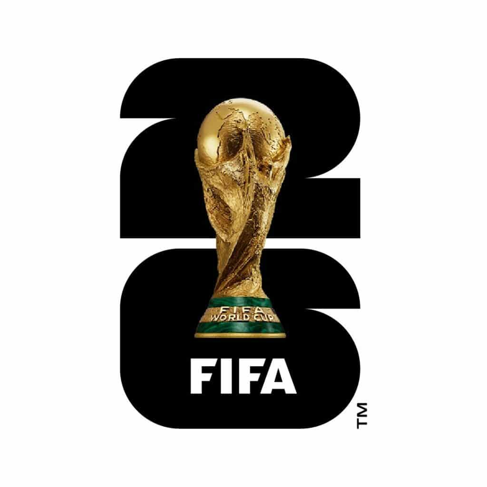

Copa do mundo 2026
México

Cultura
- O México possuí uma cultura de origem milenar, com influência de diversos povos, como os maias, astecas e espanhóis. O país contém diversas práticas tradicionais, como a sua culinária, cheia de sabores picantes e intensos, e festividades populares. Eles também possuem diversos pontos turísticos, como os vestígios dos povos pré-colombianos e da colonização espanhola.
Estádios
- Estádio da Cidade do México
- Localizado em Tlalpan, na capital Cidade do México, foi inaugurado em 1966 para a Copa do Mundo de 1970.
- Estádio Guadalajara
- Localizado em Zapopan, no estado de Jalisco, foi inaugurado em 2010 para ser a nova casa do Club Deportivo Guadalajara, também conhecidos como Chivas.
- Estádio Monterrey
- Localizado em Guadalupe, no estado de Nuevo Léon, foi inaugurado em 2015 para substituir o estádio Tecnológico.